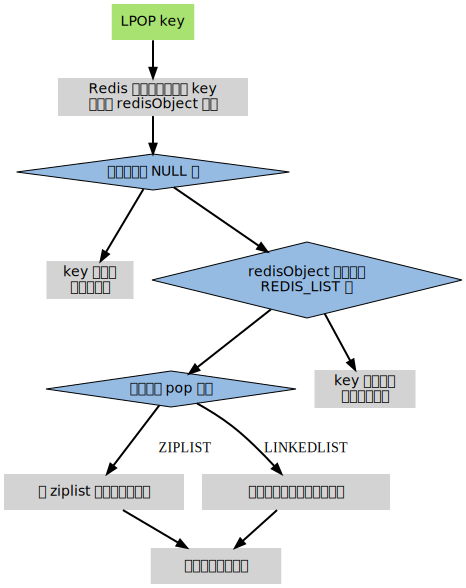
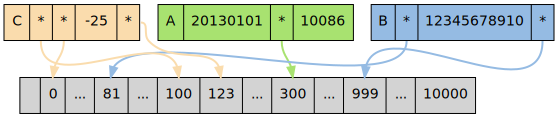

对象处理机制
Table of Contents
在 Redis 的命令中，用于对键 key 进行处理的命令占了很大一部分， 而对于键所保存的值的类型 键的类型 ，键能执行的命令又各不相同
比如说， LPUSH 和 LLEN 只能用于列表键， 而 SADD 和 SRANDMEMBER 只能用于集合键..... 另外一些命令， 比如 DEL 、TTL 和 TYPE ， 可以用于任何类型的键 但是， 要正确实现这些命令， 必须为不同类型的键设置不同的处理方式 比如说， 删除一个列表键和删除一个字符串键的操作过程就不太一样
所以Redis 必须让每个键都带有类型信息， 使得程序可以检查键的 类型 ， 并为它选择合适的处理方式
另外 Redis 的每一种数据类型，比如字符串、列表、有序集， 它们都拥有不只一种底层实现（Redis 内部称之为编码，encoding）。这说明， 每当对某种数据类型的键进行操作时， 程序都必须根据键所采取的编码， 进行不同的操作
比如说， 集合类型就可以由字典和整数集合两种不同的数据结构实现 但是， 当用户执行 ZADD 命令时， 他/她应该不必关心集合使用的是什么编码， 只要 Redis 能按照 ZADD 命令的指示， 将新元素添加到集合就可以了
操作数据类型的命令除了要对键的类型进行检查之外， 还需要根据数据类型的不同编码进行 多态 处理
为了解决以上问题， Redis 构建了自己的类型系统， 这个系统的主要功能包括：
- redisObject 对象
- 基于 redisObject 对象的类型检查
- 基于 redisObject 对象的显式多态函数
- 对 redisObject 进行分配、共享和销毁的机制
因为 C 并不是面向对象语言，这里将 redisObject 称呼为对象： 1. 为了讲述的方便 2. 希望通过模仿 OOP 的常用术语，让这里的内容更容易被理解 redisObject 实际上是只是一个结构 (struct) 类型
redisObject
redisObject 是 Redis 类型系统的核心， 数据库中的每个 键 , 值 以及 Redis 本身处理的参数 ， 都表示为这种数据类型。redisObject 的定义位于 redis.h ：
/* * Redis 对象 */ typedef struct redisObject { unsigned type:4; // 类型 unsigned notused:2; // 对齐位 unsigned encoding:4; // 编码方式 unsigned lru:22; // LRU 时间（相对于 server.lruclock） int refcount; // 引用计数 void *ptr; // 指向对象的值 } robj;
type , encoding 和 ptr 是最重要的三个属性：
type 记录了对象所保存的值的 类型 ，它的值可能是以下常量的其中一个（定义位于 redis.h）：
/* * 对象类型 */ #define REDIS_STRING 0 // 字符串 #define REDIS_LIST 1 // 列表 #define REDIS_SET 2 // 集合 #define REDIS_ZSET 3 // 有序集 #define REDIS_HASH 4 // 哈希表
encoding 记录了对象所保存的值的 *编码*，它的值可能是以下常量的其中一个（定义位于 redis.h）：
/* * 对象编码 */ #define REDIS_ENCODING_RAW 0 // 编码为字符串 #define REDIS_ENCODING_INT 1 // 编码为整数 #define REDIS_ENCODING_HT 2 // 编码为哈希表 #define REDIS_ENCODING_ZIPMAP 3 // 编码为 zipmap #define REDIS_ENCODING_LINKEDLIST 4 // 编码为双端链表 #define REDIS_ENCODING_ZIPLIST 5 // 编码为压缩列表 #define REDIS_ENCODING_INTSET 6 // 编码为整数集合 #define REDIS_ENCODING_SKIPLIST 7 // 编码为跳跃表
ptr 是一个指针，指向 实际保存值的数据结构 ，这个数据结构由 type 属性和 encoding 属性决定
举个例子，如果一个 redisObject 的 type 属性为 REDIS_LIST ， encoding 属性为 REDIS_ENCODING_LINKEDLIST 那么这个对象就是一个 Redis 列表，它的值保存在一个双端链表内，而 ptr 指针就指向这个双端链表 另一方面，如果一个 redisObject 的 type 属性为 REDIS_HASH ， encoding 属性为 REDIS_ENCODING_ZIPMAP 那么这个对象就是一个 Redis 哈希表，它的值保存在一个 zipmap 里，而 ptr 指针就指向这个 zipmap ；诸如此类
下图展示了 redisObject 、Redis 所有数据类型、以及 Redis 所有编码方式（底层实现）三者之间的关系：

REDIS_ENCODING_ZIPMAP 没有出现在图中， 因为从 Redis 2.6 开始， 它不再是任何数据类型的底层结构
类型检查和多态
有了 redisObject 结构的存在， 在执行处理数据类型的命令时， 进行类型检查和对编码进行多态操作就简单得多了
当执行一个处理数据类型的命令时， Redis 执行以下步骤：
- 根据给定 key ，在数据库字典中查找和它相对应的 redisObject ，如果没找到，就返回 NULL
- 检查 redisObject 的 type 属性和 执行命令所需的类型 是否相符，如果不相符，返回 类型错误
- 根据 redisObject 的 encoding 属性所指定的编码，选择 合适的操作函数 来处理底层的数据结构
返回数据结构的 操作结果 作为命令的 返回值
作为例子，以下展示了对键 key 执行 LPOP 命令的完整过程：

对象共享
有一些对象在 Redis 中非常常见， 比如命令的返回值 OK 、 ERROR 、 WRONGTYPE 等字符 另外，一些小范围的整数，比如个位、十位、百位的整数都非常常见
为了利用这种常见情况， Redis 在内部使用了一个 Flyweight 模式：通过 预分配 一些 常见的值对象 ， 并在多个数据结构之间 共享 这些对象， 程序避免了重复分配的麻烦， 也节约了一些 CPU 时间。Redis 预分配的值对象有如下这些：
- 各种命令的返回值，比如：
- 执行成功时返回的 OK
- 执行错误时返回的 ERROR
- 类型错误时返回的 WRONGTYPE
- 命令入队事务时返回的 QUEUED 等等
包括 0 在内，小于 redis.h/REDIS_SHARED_INTEGERS 的所有整数
REDIS_SHARED_INTEGERS 的默认值为 10000
因为命令的回复值直接返回给客户端， 所以它们的值无须进行共享
另一方面， 如果某个命令的输入值是一个小于 REDIS_SHARED_INTEGERS 的整数对象， 那么当这个对象要被保存进数据库时， Redis 就会 释放 原来的值， 并将值的指针 指向 共享对象 。作为例子，下图展示了三个列表，它们都带有指向共享对象数组中某个值对象的指针：

三个列表的值分别为：
- 列表 A ： [20130101, 300, 10086]
- 列表 B ： [81, 12345678910, 999]
- 列表 C ： [100, 0, -25, 123]
共享对象只能被带指针的数据结构使用 比如共享对象只能被字典和双端链表这类能带有指针的数据结构使用 像整数集合和压缩列表这些只能保存字符串、整数等字面值的内存数据结构， 就不能使用共享对象
引用计数
当将 redisObject 用作数据库的键或者值， 而不是用来储存参数时， 对象的生命期是非常长的 因为 C 语言本身没有自动释放内存的相关机制， 如果只依靠程序员的记忆来对对象进行追踪和销毁， 基本是不太可能的 另一方面，正如前面提到的，一个共享对象可能被多个数据结构所引用， 这时像是“这个对象被引用了多少次？”之类的问题就会出现
为了解决以上两个问题， Redis 的对象系统使用了 引用计数 技术来负责 维持 和 销毁 对象， 它的运作机制如下：
- 每个 redisObject 结构都带有一个 refcount 属性，指示这个对象被引用了多少次
- 当新 创建 一个对象时，它的 refcount 属性被设置为 1
- 当对一个对象进行 共享 时，Redis 将这个对象的 refcount 增一
- 当 使用完 一个对象之后，或者 取消 对 共享对象的引用 之后，程序将对象的 refcount 减一
- 当对象的 refcount 降至 0 时，这个 redisObject 结构 ，以及它所 引用的数据结构的内存 ，都会被 释放